Disclaimer : This post contains lots of Highdef images. Please be patient and wait for them to load.¶
Secondly, this post just displays my outputs in 3D reconstruction. I had developed a 3D reconstruction arrangement this last year.¶
Cool stuff: I’ll be making a complete blog series on making a 3D reconstruction program. Everything from using the camera, … all the way to working with 3D files.¶
I’ll probably host it as a GitBook. :)¶
Setup:¶
I used the single camera and projector setup. Most stereo setups use a 2 camera setup for stereo vision. However, I was implementing Brown University’s paper on using a single-camera-projector arrangement for 3D geometry acquisition.
Initial Setup using projector and camera
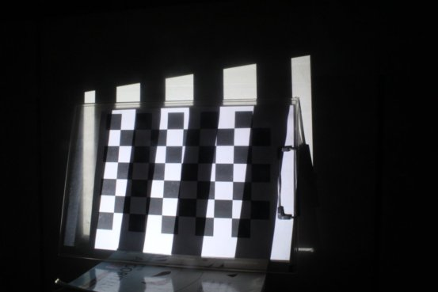 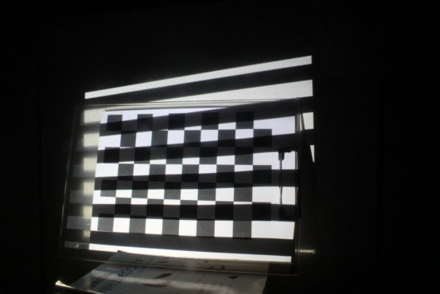
Camera Calibration using SL patterns
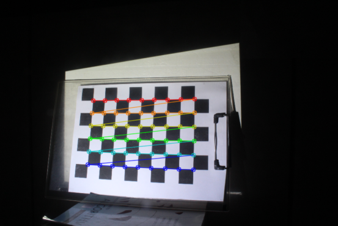
Outputs¶
Registration of David Bust, and Bottle
Surface View 1 of David Scan (from dataset)
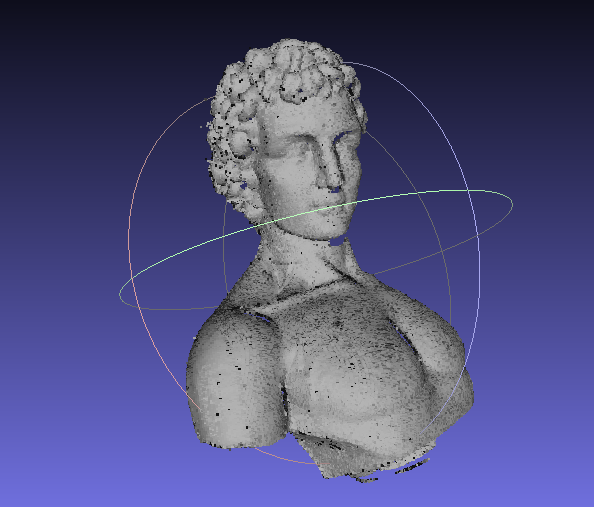
Surface View 2 of David Scan (from dataset)
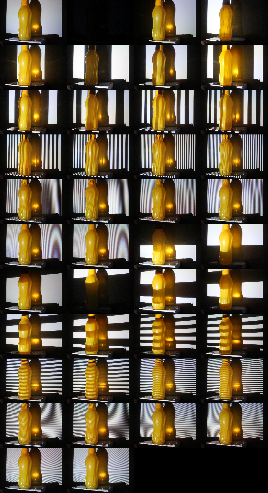
Structured Light in runtime with Bottle example
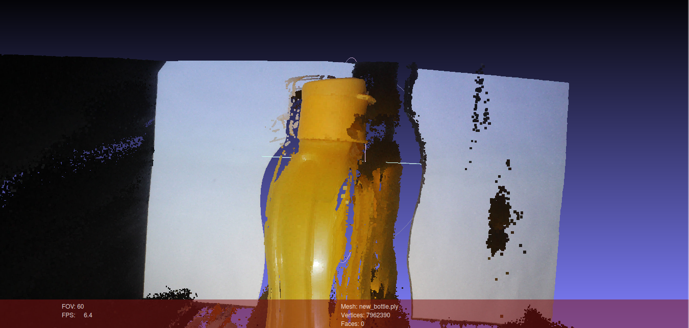
Tupperware Bottle Scan - Stage 1 (Improves later on)
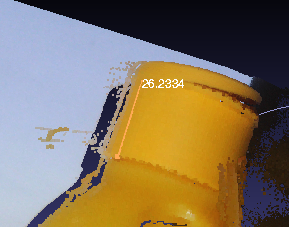
Closeup of Bottle Scan (next stage). If you look closely, I have made a dimension as well. The cap length shows to be 26.23 mm.
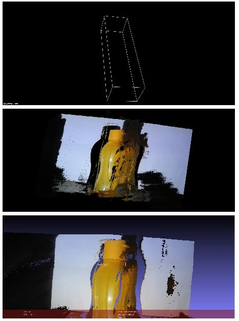
Structured Light Sequences projected on Bottle 2
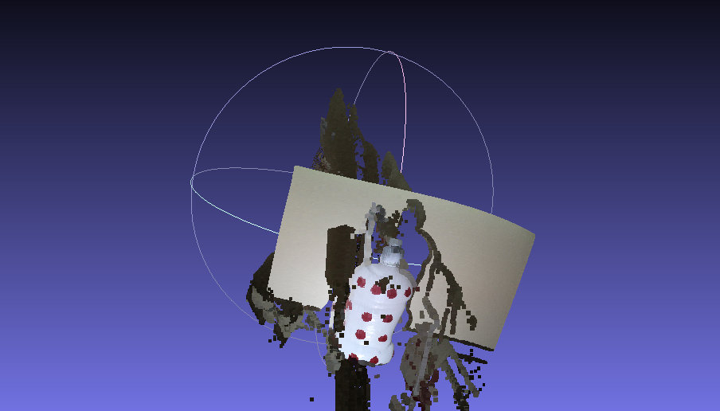
Random Bottle Scan (later stage). I cannot find a picture set for the above tupperware bottle.
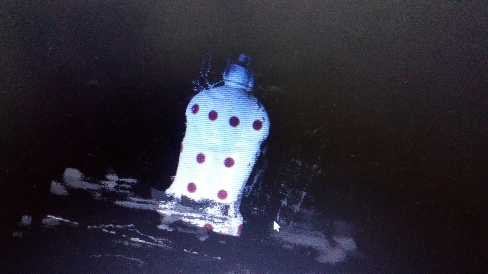
Cleaner scan of above object (End Stage)
Structured Light Sequences on Woodland Shoes
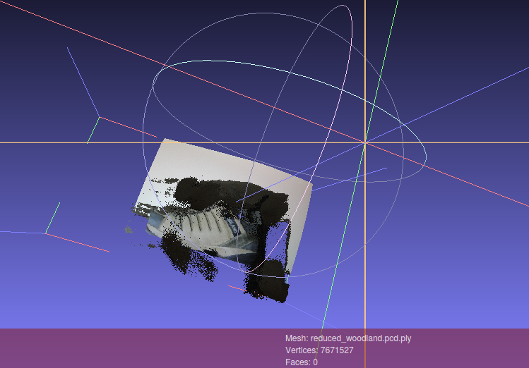 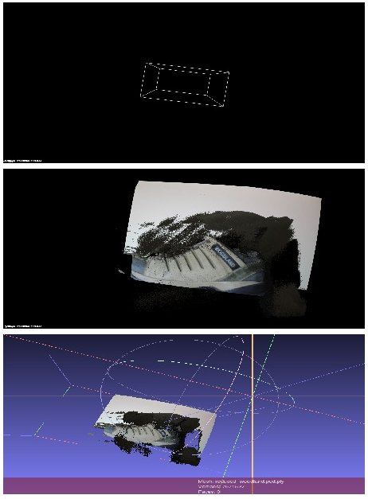
And here’s a 3D scan of my shoes :P
the current outputs are just as a temporary showcase. I will be hosting the complete steps of how to make a structured light 3D reconstruction engine, with only 1 camera and 1 projector soon. That’s for sure to be expected by the coming year.¶
Results and Summary :¶
As seen, there is a error of about 3mm. Which can be resolved by further robust calibration, and less interference/disturbance of surrounding light - SO that an accurate BRDF value can be computed. Also, the material/object under scanning can be coated with a MATT-FINISH POLISH, to avoid surface reflection (as seen in the bottle).
Anyways.. I’ll get the complete series online soon. Stay tuned ! ;)